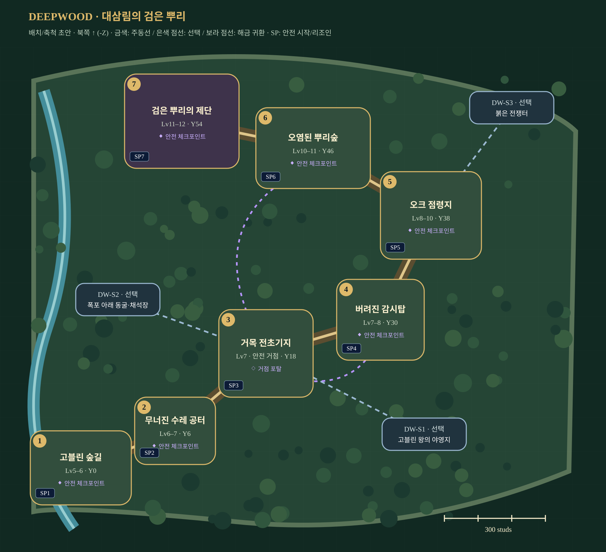

일곱 이야기를 하나의 숲으로. 거목을 중심으로 진입하고, 점령지를 지나 숲 아래 봉인으로 내려가는 모험.
제작 배치 초안 · 1~4인 · Lv5–12 · Roblox Studio 구현 전
각 스토리에 SP1~SP7 안전 시작 마당을 둔다. 시작·이어하기·재플레이·리조인을 지원하며, 스토리 사이는 직접 이동한다. 에픽 이동·안전 귀환은 포탈.

원본 지도 열기 · 제작 사양 · 좌표 데이터
내부 그림은 연결도이며 실제 축척/콜라이더가 아니다. 몬스터·장치의 정확한 위치는 블록아웃 후 결정한다.
거목·회갈색 돌길·초지·절벽/폭포·석조 보라 포탈을 공유한다. TD 타워 패드와 웨이브 경로는 자유 이동 RPG 공간으로 재구성한다. 이 보드의 선/도형은 설계 기호이며 게임용 아이콘이 아니다.